A step-by-step guide to taking better photos and videos with the phone already in your pocket — from holding it correctly and finding good light, to composition, creative camera angles and smooth cinematic video moves.
A phone camera is small, but the ideas that make a picture good are exactly the same as on a big camera: light, composition, angle and timing. Everything in here works on any modern Android (Samsung, Tecno, Infinix, Xiaomi…) or iPhone. Where the menus differ, both are shown.
📷 Photo tips
Marked with an orange tag. Most also improve your video.
🎬 Video tips
Marked with a teal tag. Chapter 06 is all video.
🧪 Try it
Short exercises. Ten minutes of shooting teaches more than an hour of reading.
💡
One idea to keep in mind
Better photos come from moving your feet and your phone — not from buying a better phone. Every chapter below is really about where you stand, where you point, and when you press.
01
Know your camera
Five small habits that instantly make every photo and video sharper, cleaner and better exposed.
1.1 Clean the lens photo + video
Your phone lives in pockets and hands, so the lens is almost always covered in a thin film of oil. That film scatters light and gives you hazy, low-contrast photos with glowing streaks around lights. Wipe the lens on a soft cotton shirt before you shoot. It is the single biggest free upgrade available.
1.2 Hold it steady photo + video
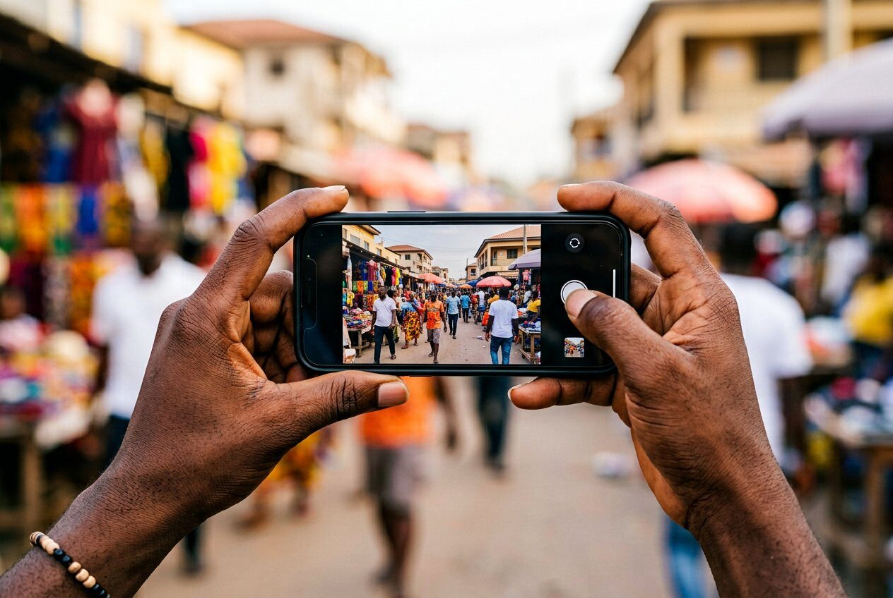
The two-hand grip. Both hands on the short edges, thumbs resting near the screen edge, index fingers steadying the top corners. Elbows pulled in against your ribs turn your body into a tripod.
Two hands, elbows in. Pull your elbows against your body. Hold the phone close, not at arm's length.
Use the volume button as the shutter. Pressing the on-screen button with a thumb shakes the phone; the side button is easier to squeeze gently.
Breathe out, then shoot. Take the picture at the end of a slow exhale, when your body is stillest.
Lean on something. A wall, table, tree or car roof removes most shake. For night shots this matters even more.
Use the timer for tripod shots. With the phone on a tripod or propped on a bag, a 3-second timer means your finger is not touching it when the photo is taken.
1.3 Tap to focus, slide to expose photo + video
The camera guesses what you want sharp and how bright the picture should be. It is often wrong. Take control with one finger:
The yellow square is the focus point. The small sun beside it is the exposure control. On Android the icons differ slightly, but the gestures are the same: tap, slide, press-and-hold.
☀️
Expose for the bright parts
If in doubt, make the photo slightly darker than looks right. Shadows can be brightened later, but a sky that has turned pure white is gone forever.
1.4 Turn on the grid photo + video
The grid divides the screen into thirds and is the fastest way to keep horizons level and place subjects well (chapter 03 explains why).
iPhone: Settings → Camera → Composition → Grid (also turn on Level).
Android: open the Camera → tap the ⚙️ settings gear → Grid lines / Composition lines → choose 3×3.
1.5 Zoom with your feet photo + video
Pinching to zoom on most phones is digital zoom — it just crops the picture and stretches it, which is why zoomed photos look muddy. Instead:
Walk closer. Getting physically nearer is always sharper than zooming.
Use the lens buttons (0.5×, 1×, 2×, 3×, 5×). Those are real lenses or high-quality crops. Avoid values in between, like 1.7×.
Ultra-wide (0.5×) is for tight rooms, big landscapes and dramatic low angles. It stretches faces — keep people away from the edges.
Telephoto (2×–5×) is the most flattering for portraits and picks details out of busy scenes.
1.6 Vertical or horizontal? photo + video
Decide before you shoot, based on where it will be watched. Cropping a horizontal video to vertical later throws away two-thirds of the picture. If unsure, shoot video horizontally in 4K so you have room to crop.
1.7 What the modes are for photo + video
Mode
Use it for
Tip
Photo
Everyday shooting. HDR blends bright and dark areas automatically.
Leave HDR on Auto. Turn on Live/Motion photo to rescue blinks.
Portrait
People, pets and objects with a blurred background.
Stand 1–2.5 m away, good light, plain background. Check hair edges.
Night
Low light: streets, indoors, candles, city lights.
Hold still for 2–5 seconds or lean on something. Never use flash for scenery.
Pano
Very wide views: lakes, hills, stadiums, long rooms.
Move slowly, keep the arrow on the line, avoid moving people.
Pro / Manual
Control ISO, shutter speed, white balance and focus yourself.
Long shutter (1–4 s) on a tripod for light trails and silky water.
Video
Normal video at 1080p or 4K, 30 or 60 fps.
Settings in chapter 06. Lock exposure before recording.
Slo-mo
Splashes, jumps, dancing, sport at 120–240 fps.
Needs a lot of light — shoot outdoors in the daytime.
Time-lapse
Clouds, traffic, sunsets, crowds, building something.
Tripod or prop the phone. Ten real minutes become ~20 seconds.
🧪 Try it — 10-minute warm-up
Wipe the lens. Turn on the grid. Pick one object on a table.
Take a photo using the two-hand grip and the volume button.
Tap on the object, then slide the exposure down until the background darkens. Take another.
Now walk closer instead of zooming and take a third. Compare the three at full size.
02
Light is everything
Photography literally means "drawing with light". Learn to see where light is coming from and your pictures change overnight.
2.1 The best light of the day: golden hour photo
Golden hour. The hour after sunrise and before sunset. The sun is low, so light is soft and warm, shadows are long and gentle, and hair gets a glowing rim. Almost anything looks good in it.Because Kampala sits on the equator, sunrise and sunset barely move through the year, so golden hour is reliably 07:00–08:00 and 18:00–19:00. Plan portraits and landscapes for those windows.
2.2 Direction of light photo + video
Before you press the button, ask: where is the light coming from? Then move yourself or your subject until it falls the way you want.
Seen from above. The grey patch is the shadow. Front light is easy but flat. Side light sculpts faces and shows texture. Back light gives either a glowing outline (tap on the face) or a silhouette (tap on the sky).
Side light
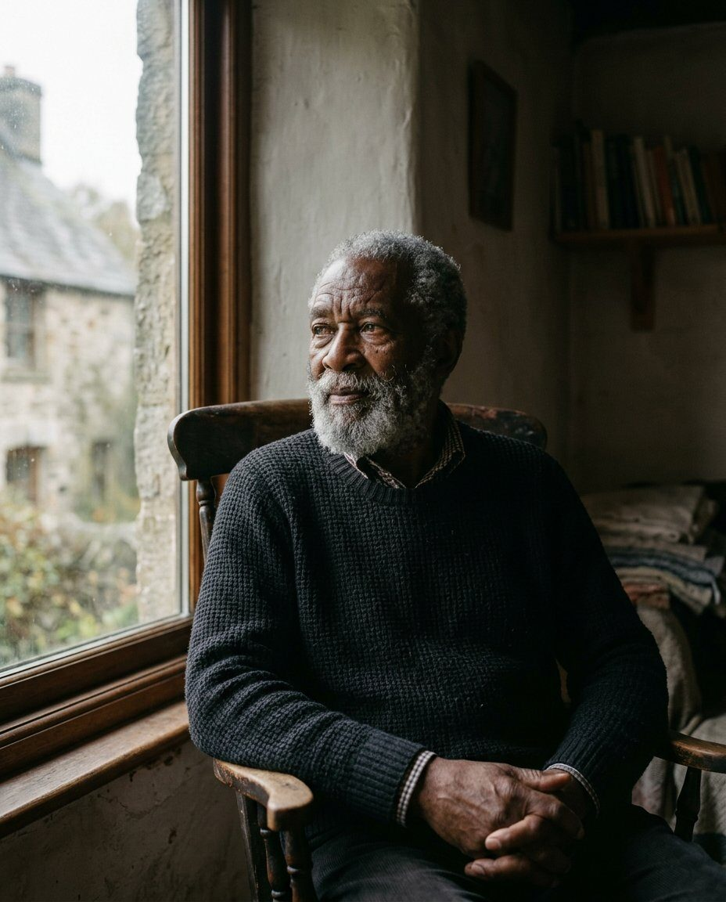
Back light
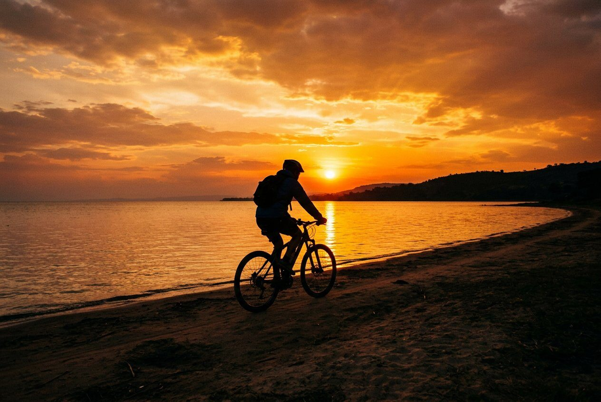
Left: window light from one side gives shape, texture and dignity — turn the subject until one cheek is bright and the other soft. Right: for a silhouette put the sun directly behind the subject, tap on the bright sky, then slide the exposure down until the person is pure black.
2.3 Harsh sun vs open shade photo + video
Avoid
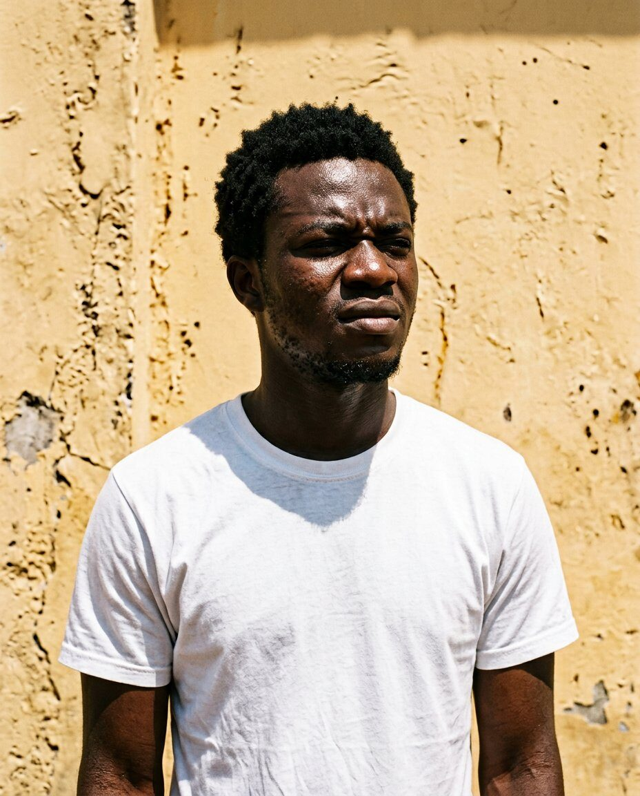
Better
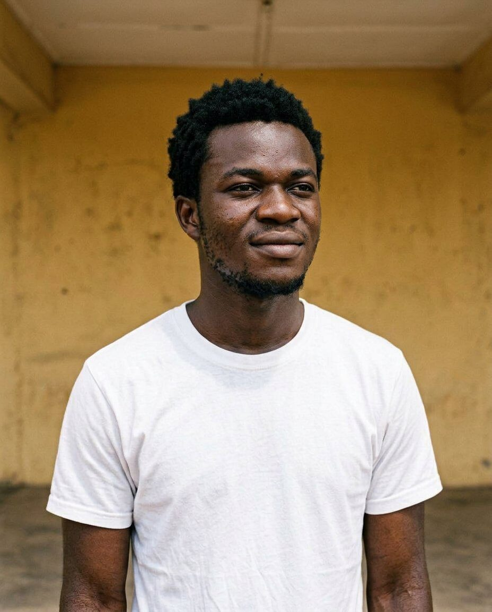
Same person, same wall, ten steps apart. Midday sun comes from straight above: eye sockets go black, skin shines and everyone squints. Open shade — the edge of a veranda, a tree, a doorway — turns the whole sky into one giant soft light. Stand your subject just inside the shade, facing out toward the light.
2.4 Indoors: use the window photo + video
Switch off the ceiling lights and get close to a window. Mixed daylight and bulbs give strange yellow-blue skin tones.
Face the subject toward the window at about 45° for gentle side light. Face them straight into it for soft, even beauty light.
Never put the window behind them — unless you want a silhouette.
A white bedsheet, paper or wall opposite the window bounces light back into the shadow side.
2.5 At night photo + video
Use Night mode and stay perfectly still — lean on a wall or rest the phone on something. The phone stacks several exposures over 2–5 seconds.
Find a light source — a shop sign, a street lamp, a screen — and put your subject facing it.
Avoid the flash for scenery. It only reaches two metres and flattens everything. For a person right in front of you it can look bold and "fashion" — try it deliberately, not by accident.
Blue hour (just after sunset) is the best time for city skylines: sky still has colour, lights are already on.
🧪 Try it — one face, three directions
Ask a friend to stand near a window or outside in late afternoon light.
Take one photo with the light behind you (front light), one with the light to the side, one with the light behind them.
For the last one take two versions: tap on their face, then tap on the bright background. One glows, one is a silhouette.
03
Composition
Composition is simply deciding what goes where in the frame. These seven patterns cover most great photos you have ever seen.
3.1 The rule of thirds photo + video
Imagine the frame cut into a 3×3 grid (that is what the grid setting shows). Put your subject on one of the lines, and the most important point — usually the eyes — near one of the four intersections. Put horizons on the top or bottom line, never through the middle.
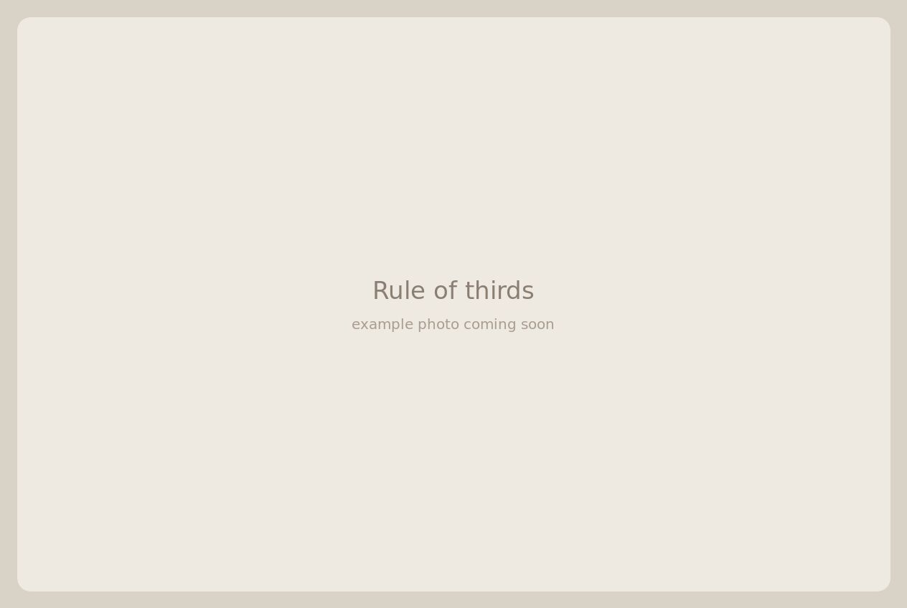
Toggle the grid to see how the subject sits on a third line and the horizon on the upper line. The orange dots are the "power points".Leave space in front of a person's gaze or a moving object's direction ("lead room"). The picture feels balanced instead of cramped.
3.2 Leading lines photo + video
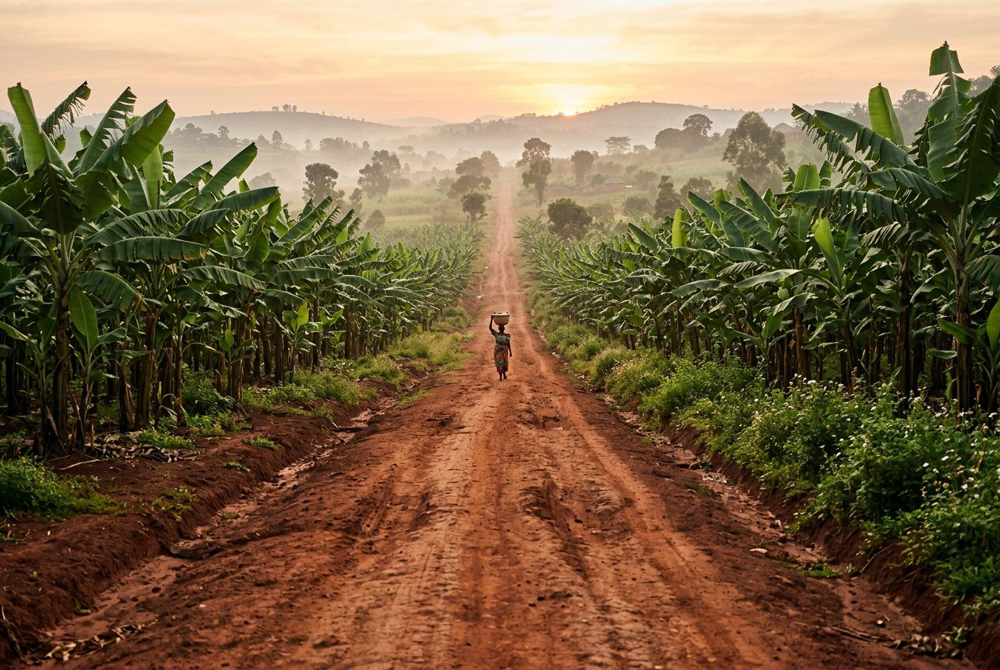
Leading lines. Roads, paths, fences, railings, rivers, shadows and rows of anything pull the eye from the edge of the frame to your subject. Stand in the middle of the line and shoot along it, low if you want more drama.
3.3 Framing photo + video
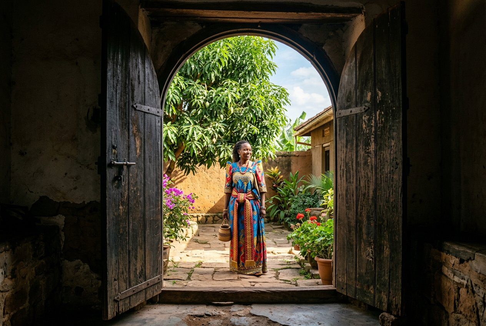
A frame within the frame. Doorways, windows, arches, branches, gaps in a crowd — anything that surrounds your subject adds depth and tells the viewer exactly where to look. Expose for the bright subject and let the frame go dark.
3.4 Symmetry and patterns photo + video
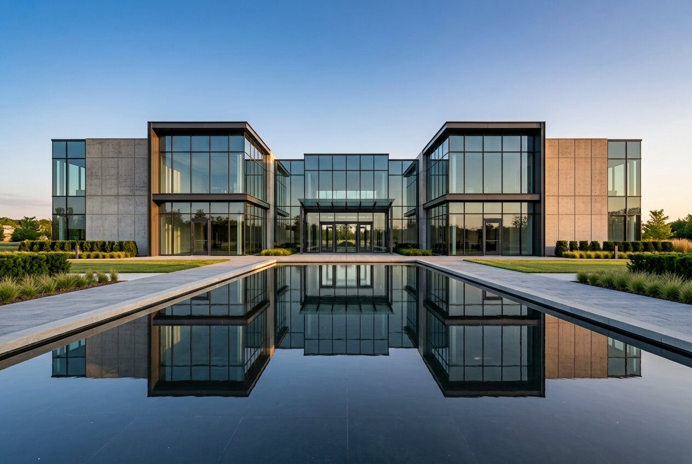
Symmetry is the one time you should ignore the rule of thirds: put the centre line exactly in the middle and get the phone perfectly level (use the grid). Reflections, corridors, buildings and rows of market stalls are full of it. A pattern becomes more interesting when one thing breaks it.
3.5 Negative space photo
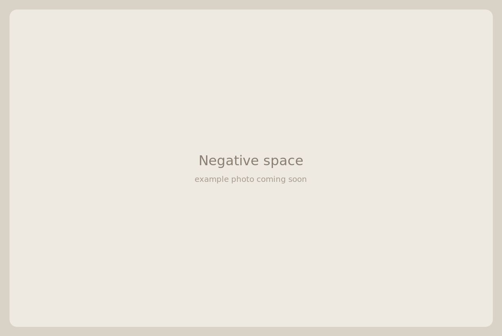
Negative space is the empty area around your subject. A small subject in a big calm space feels quiet, lonely or free. Sky, water, walls and fog make excellent empty space. Put the subject on a power point and let the emptiness do the talking.
3.6 Fill the frame photo
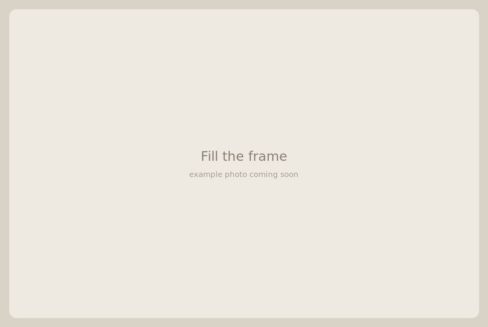
The opposite of negative space. Get so close that the subject touches all four edges and no distracting background is left. Faces, food, textures, fabrics and hands work beautifully. This is where a 2× lens shines.
3.7 Layers: foreground, middle, background photo + video
A flat photo has one layer. A photo with something close to the lens, a subject in the middle and a background behind feels three-dimensional. Try holding leaves, a railing or a friend's shoulder a few centimetres from the lens.
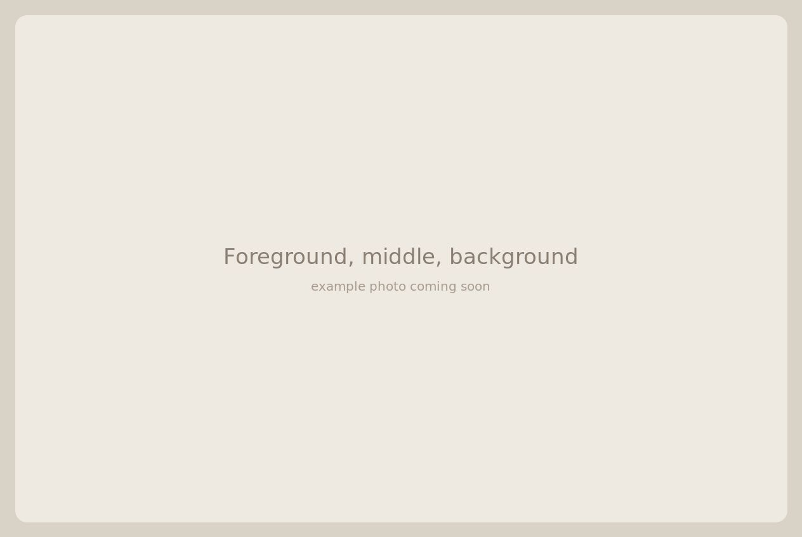
Three layers in one frame. Blurred flowers close to the lens, the person sharp in the middle, hills fading behind. Tap on the subject so the foreground stays soft.
3.8 Clean up the background photo + video
Check the edges of the frame before you shoot. Half a person, a bin, a stray foot — move one step and they are gone.
Watch for things "growing" out of heads: poles, trees, lamp posts. One step left or right fixes it.
Simplify. A plain wall, sky, water or foliage behind the subject makes them pop. Busy backgrounds fight for attention.
Get lower. Kneeling puts more sky behind a person and hides clutter on the ground.
🧭
Rules are starting points
Centre a subject for symmetry or a bold portrait. Put a horizon in the middle for a perfect reflection. Break the rules on purpose — that is the difference between a mistake and a style.
🧪 Try it — one street, seven photos
Walk one street near you and come back with one photo for each pattern: thirds, leading lines, framing, symmetry, negative space, fill the frame, layers. Do not take more than three attempts per pattern — decisions are the exercise.
04
Camera angles
The angle is where you put the camera in relation to your subject. Change the angle and you change how the viewer feels about what they are looking at.
Most people take every photo from the same place: standing, phone at chest height. That is the view everyone already has. The moment you crouch, climb or lie down, your pictures stop looking like everyone else's.
The five basic heights. Same subject, five different stories. The camera icons show where your phone goes; the dashed lines show where it points.
The angle toolkit
Each card shows the camera position, what the angle does to the viewer, what it is good for, and how to do it on a phone.
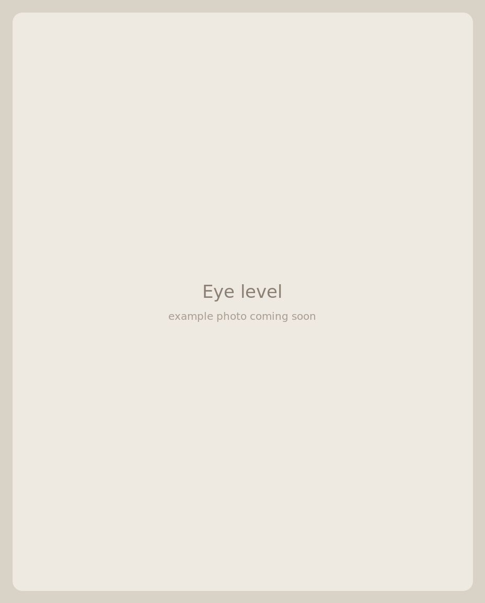
Eye level
Effect
Neutral and honest. The viewer meets the subject as an equal.
Use for
Everyday portraits, documentary, products. Children and pets — get down to their eye level and the photo transforms.
How
Kneel or sit until the lens is level with the subject's eyes. Focus on the nearest eye.
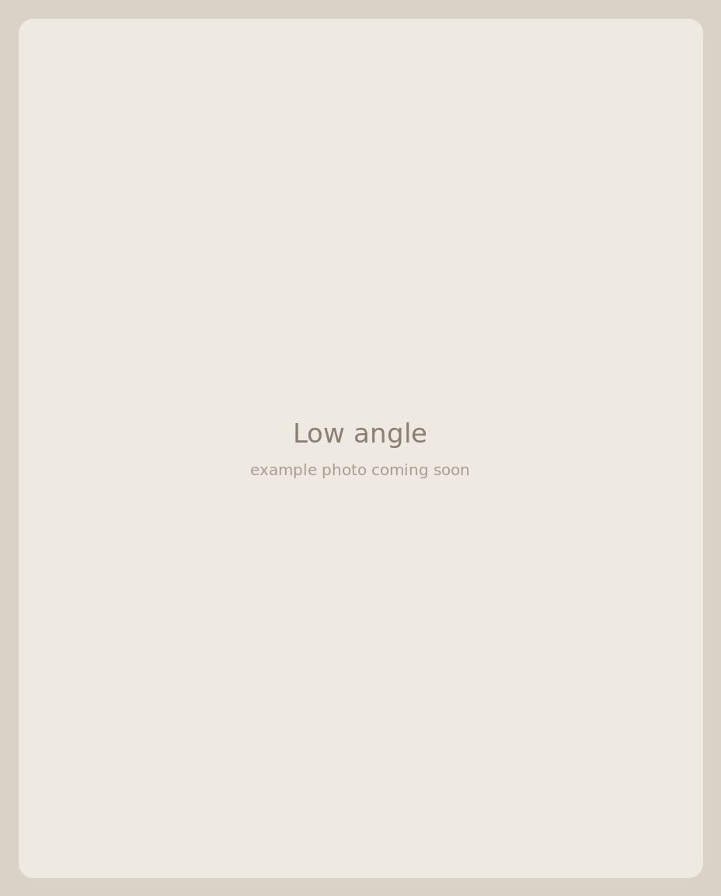
Low angle
Effect
Power, height, drama. Subjects tower and backgrounds turn to clean sky.
Use for
Buildings, athletes, dancers, boda riders, kids as heroes, anything you want to look big.
How
Crouch or put the phone near the ground. Flip the phone upside down so the lens is at the very bottom — you get several centimetres lower. Try the 0.5× lens for extra drama.
High angle
Effect
Subject looks smaller, softer, more vulnerable or cute. Shows the layout of a scene.
Use for
Babies and pets, flattering selfies (slightly above the eyes), plates of food, groups seen from a balcony.
How
Stand on a step, hold the phone above your head, or shoot from stairs and balconies. Ask the subject to look up.
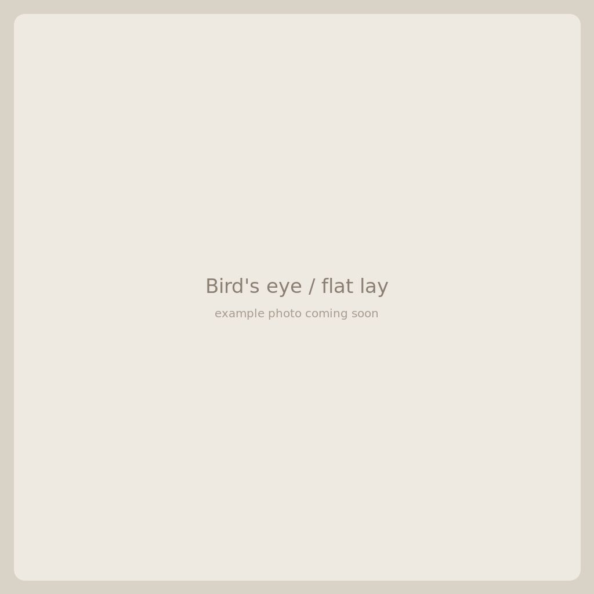
Bird's eye (top-down)
Effect
Graphic, tidy, map-like. Turns objects into shapes and patterns.
Use for
Food, flat lays, desks, hands at work, markets and crowds from above, swimming pools, patterned floors.
How
Hold the phone flat and parallel to the surface. iPhones show a crosshair level — line up the two crosses. Stand on a chair for a bigger table. Watch for your own shadow.
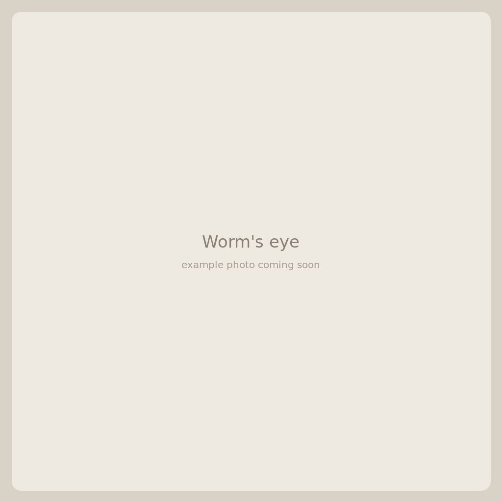
Worm's eye
Effect
Vertigo and scale. Lines converge toward a vanishing point in the sky.
Use for
Trees, tall buildings, stairwells, a circle of friends looking down into the lens.
How
Lie on your back or place the phone on the ground and use the timer. Ultra-wide (0.5×) exaggerates the converging lines.
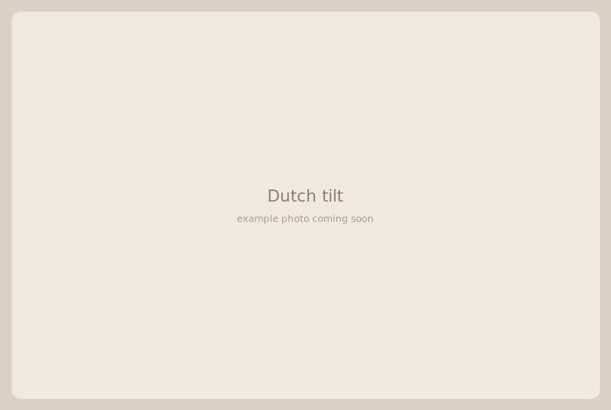
Dutch tilt
Effect
Tension, energy, unease — something is not quite right.
Use for
Action, sport, music videos, street scenes, playful portraits. Use sparingly; one tilted shot in ten.
How
Rotate the phone so the horizon runs diagonally. Commit to it — a 5° tilt looks like a mistake, 20° looks intentional.
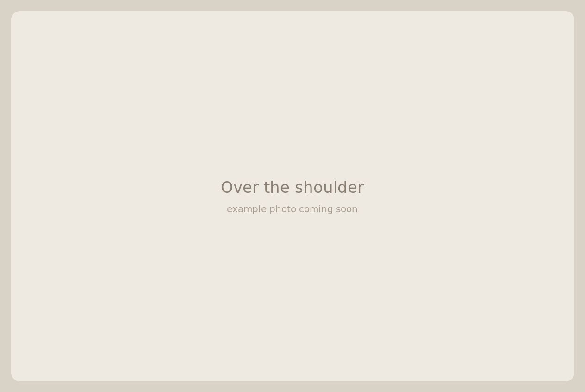
Over the shoulder
Effect
Puts the viewer inside a conversation. Adds depth and context.
Use for
Two people talking, someone showing something, interviews, video dialogue.
How
Stand just behind and beside person A; keep the edge of their shoulder or head blurred in the corner of the frame; focus on person B. Portrait mode helps blur the shoulder.
Point of view (POV)
Effect
Immersive — the viewer becomes the subject.
Use for
Cooking, crafts, riding, walking tours, unboxing, "a day in my life" videos.
How
Hold the phone at your own eye or chest height, pointing where you look. Include your hands. For video, a cheap chest or head mount keeps it steady.
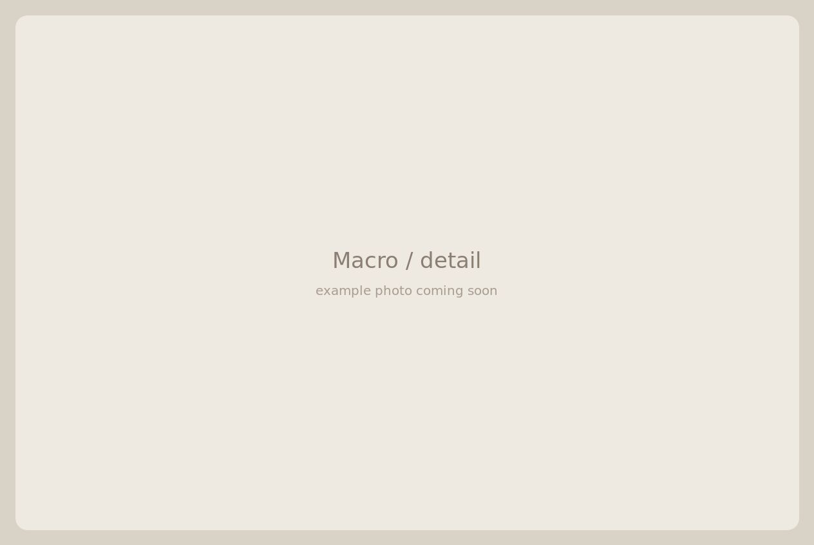
Macro & details
Effect
Intimacy and surprise: textures and tiny worlds we never notice.
Use for
Flowers, insects, fabric, food, eyes, jewellery, rain drops, hands at work. In video, detail shots ("inserts") glue a story together.
How
Many phones switch to macro automatically when you get within a few centimetres (a flower icon appears). If not, step back to ~20 cm and use 2×. Tap to focus, hold your breath, and take several — depth of field is paper-thin.
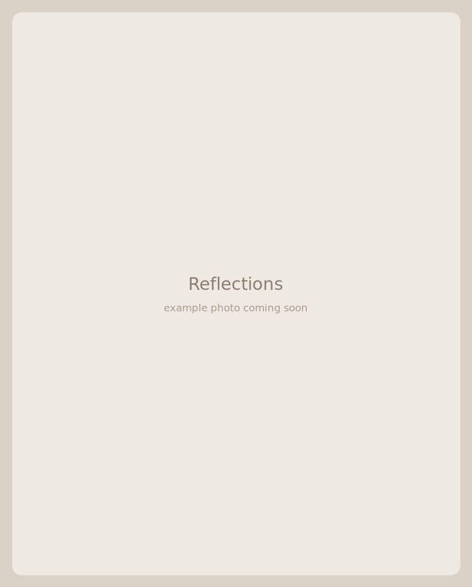
Reflections
Effect
Symmetry, doubling, a dream-like second world.
Use for
Puddles after rain, lakes, windows, mirrors, polished floors, sunglasses, even another phone's screen.
How
Flip the phone upside down and put the lens almost touching the water or surface. The lower you go, the bigger the reflection. Tap on the reflection to focus on it.
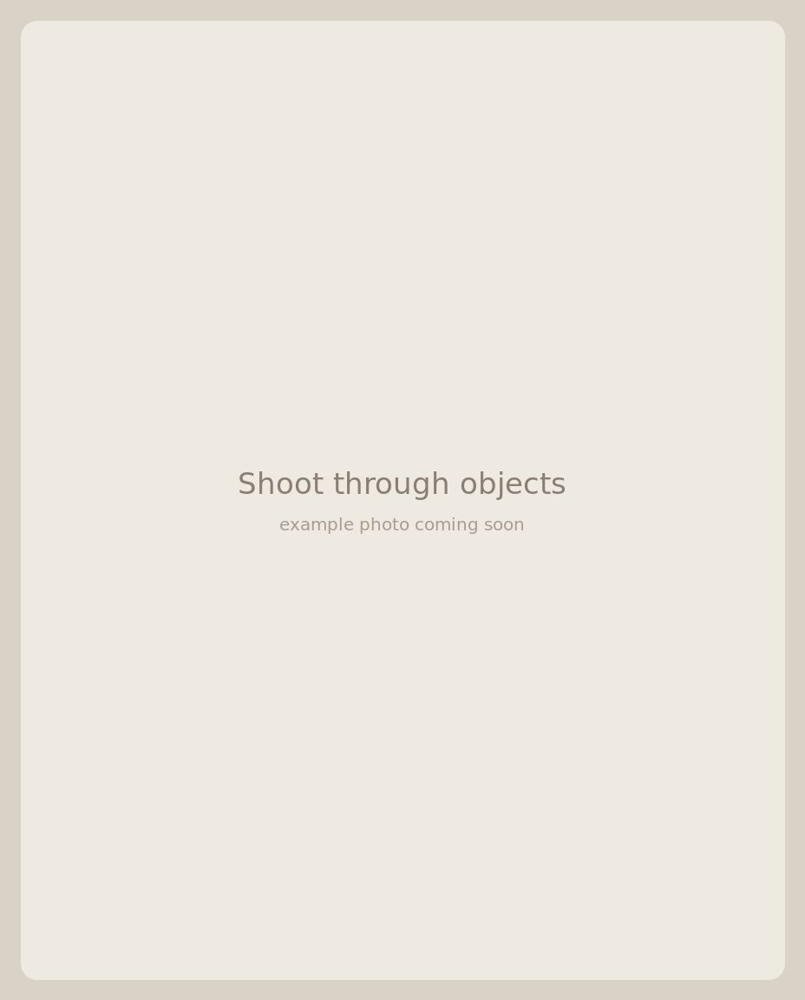
Shoot through something
Effect
Depth, mystery, a feeling of peeking in. Instant foreground layer.
Use for
Portraits through leaves, fences, glass, curtains, crowds, a glass of water, a hole in a wall.
How
Hold the object 2–5 cm from the lens so it blurs into soft colour. Tap on the subject behind it. Coloured plastic or a torn leaf produce dreamy edges.
Angle → feeling: quick reference
Camera position
The viewer feels
Best for
Eye level
Equal, honest, connected
Portraits, documentary, kids & pets (at their level)
Low angle
Subject is powerful, tall, heroic
Architecture, sport, dancers, dramatic portraits
High angle
Subject is small, gentle, vulnerable
Babies, food, flattering selfies, showing a layout
Bird's eye
Orderly, graphic, abstract
Flat lays, tables, markets from above, patterns
Worm's eye
Awe, dizziness, scale
Trees, towers, stairwells, circles of people
Dutch tilt
Energy, tension, chaos
Action, music, street, playful portraits
Over the shoulder
Part of a conversation
Dialogue, demonstrations, interviews
POV
"I am there"
Cooking, crafts, riding, tours, vlogs
Macro / detail
Curiosity, intimacy
Textures, nature, food, inserts for video
Reflection
Calm, dreamy, clever
Puddles, lakes, glass, mirrors
Through objects
Peeking in, depth
Portraits through leaves, fences, glass
🔁
The "work the scene" habit
Never take just one. When something catches your eye, take the obvious photo, then five more from five different heights and distances. The best one is almost never the first.
🧪 Try it — one subject, six angles
Pick one patient subject: a friend, a chair, a boda-boda, a mango tree.
Photograph it at eye level, low angle, high angle, bird's eye (if possible), Dutch tilt and through something.
Line the six photos up in your gallery. Notice how the same thing feels heroic, cute, chaotic or calm depending only on where you stood.
05
Photographing people
Faces are the most photographed subject in the world — and the least forgiving. A few habits make everyone look their best.
5.1 Distance and lens photo
Step back and zoom in. Wide lenses used close to a face enlarge the nose and shrink the ears. Standing 2 metres away with the 2× or 3× lens gives natural, flattering proportions — and the further the background is behind the subject, the more it melts away.
5.2 Portrait mode photo
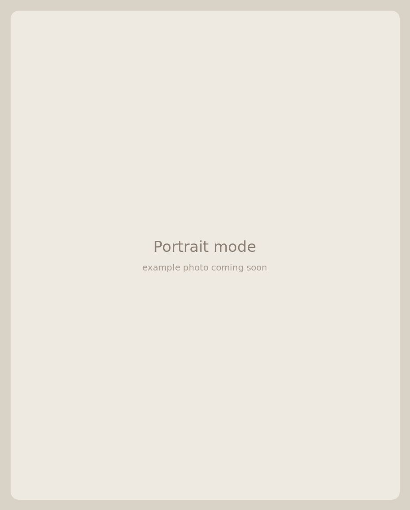
Portrait mode blurs the background using depth data. It works best 1–2.5 m away, in good light, with a clear gap between the subject and the background. Check the edges of hair and glasses; if they look chopped, take a normal photo instead.
Focus on the nearest eye. If the eyes are sharp, the photo is sharp.
Camera slightly above eye level for most people; from below it emphasises chins and nostrils (but is great for confident, powerful portraits).
Turn the body, not the face. Body at 45° to the camera, face toward the lens, weight on the back foot. Instantly slimmer and more relaxed.
Chin forward and slightly down — the classic trick to define a jawline.
Give the hands a job: a bag strap, a pocket, a cup, fixing a collar. Empty hands look stiff.
Get real expressions: tell a joke, ask them to walk toward you, shake it out, then shoot the moment after the laugh. Use burst mode (hold the shutter) for candid moments.
5.3 Groups photo
Get closer than feels natural — people should be almost touching. Gaps look like arguments.
Stagger heights: some sitting, some standing, some leaning. Triangles look better than a straight line.
Everyone faces the light; you stand with the light behind you or to the side, in open shade.
Take five in a row — someone always blinks. Count "1, 2, 3" and shoot on 3 and 4.
Use the 1× lens, not 0.5× — ultra-wide stretches the people at the edges.
5.4 Better selfies photo
Face the light — a window or open sky in front of you; never behind you.
Phone slightly above eye level and a little to one side, arm extended fully. Turn your face a few degrees toward the light.
Use the back camera when it matters: it is far better than the selfie camera. Prop the phone, set a 3–10 second timer, or use the volume button on wired earphones as a remote shutter.
Turn off "beauty" smoothing; it removes skin texture and looks fake at full size.
🧪 Try it — ten portraits, no zoom
Find open shade at 17:00–18:00. Put your friend just inside the shade, facing out.
Take ten portraits: five at 2× from 2 metres, five with 1× from 1 metre. Vary body angle, hand position and expression each time.
Compare the faces. You will never shoot a close portrait at 1× again.
06
Video techniques
Video adds two things to everything above: movement and sound. Get those two right and phone footage looks professional.
6.1 Settings before you press record video
Setting
Choose this when…
Notes
1080p · 30 fps
Sharing on WhatsApp, TikTok, Instagram. Everyday default.
Small files (~60–130 MB per minute). Looks natural.
4K · 30 fps
You want maximum quality or room to crop/zoom in editing.
Roughly 200–400 MB per minute. Phone gets warm; carry a power bank.
60 fps
Fast action: sport, dancing, kids, cars. Or to slow down to 50% later.
Very smooth, "TV" look. Needs more light than 30 fps.
Needs bright daylight; indoors it gets grainy and flickery.
24 / 25 fps
You want a cinematic, film-like feel.
In Uganda (50 Hz mains) use 25 fps to stop lights flickering. iPhone: Settings → Camera → Record Video → Show PAL Formats.
Stabilisation ON (called Steady, Super Steady, Action mode or EIS). Costs a little sharpness, saves the shot.
Lock screen rotation so the phone does not flip mid-recording.
Grid on, lens wiped, Do Not Disturb on — a call ends the recording.
Check storage and battery. Video eats both.
Flickering lights? Look for Anti-flicker / Anti-banding in camera settings and set it to 50 Hz, or record at 25/50 fps.
6.2 Lock focus and exposure video
In video, the camera constantly re-thinks focus and brightness, which shows up as "pulsing" and hunting. Before recording: frame the shot, press and hold on your subject until the lock appears, adjust brightness with the slider, then press record. Re-lock whenever you change position.
6.3 Hold still, move smoothly video
The "ninja walk". Combined with the phone's stabilisation this gives surprisingly smooth walking shots without any equipment.
Handheld
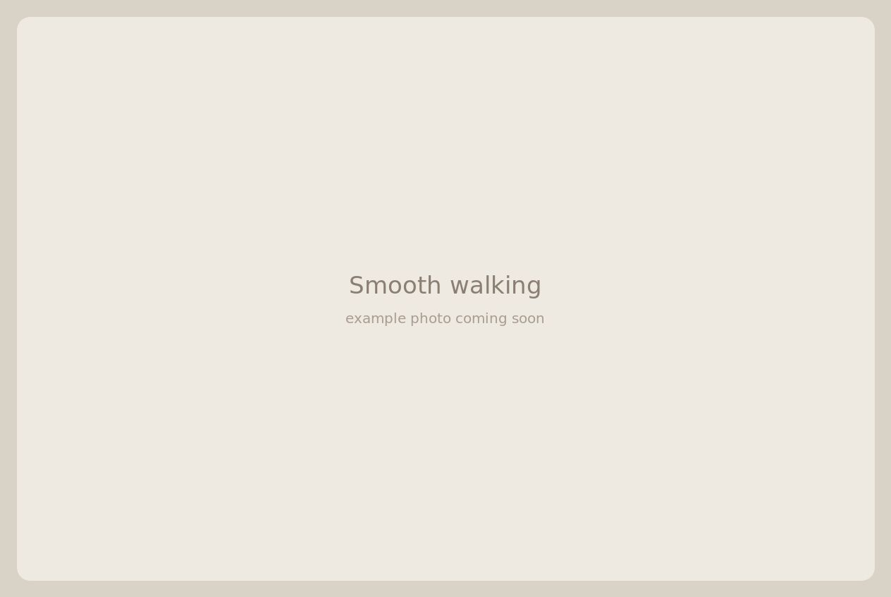
Gimbal
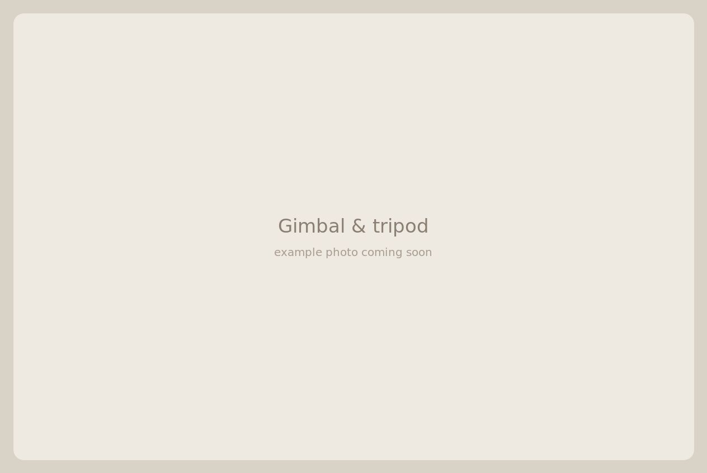
When to buy gear: a small tripod (or a phone clamp on a bottle) for interviews, talking-to-camera and time-lapses; a gimbal only once you are filming a lot of walking shots. Until then: two hands, elbows in, ninja walk.
Hold every shot still for at least 5 seconds before and after any movement. You need that "handle" to cut with.
Lean on doorframes, walls and tables for static shots. Sit and rest your elbows on your knees.
A strap or a cheap grip handle makes the phone easier to hold steady than bare fingers.
6.4 Shot sizes video
Shot sizes are the vocabulary of video. Frame at the natural "joints" — waist, chest, shoulders — and avoid cutting exactly at the knees, elbows or neck.
Wide
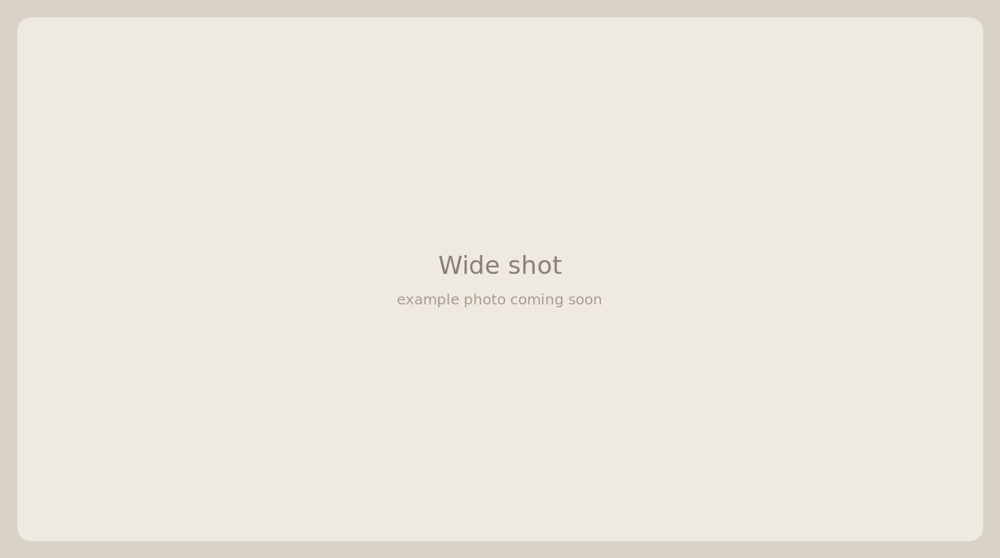
Medium
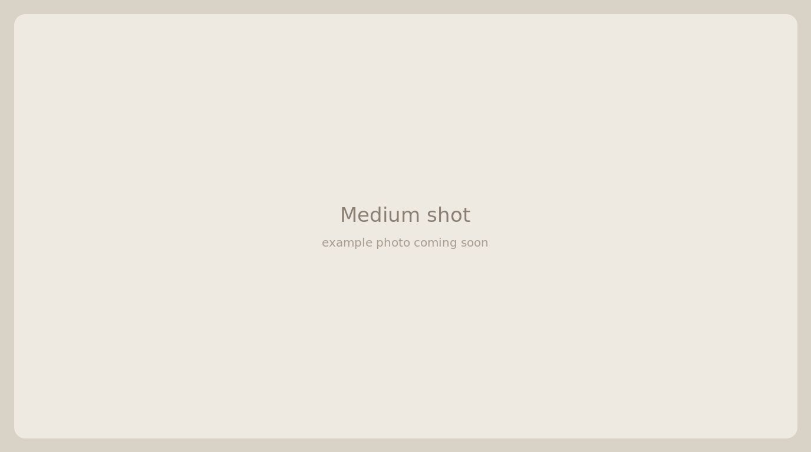
Close-up
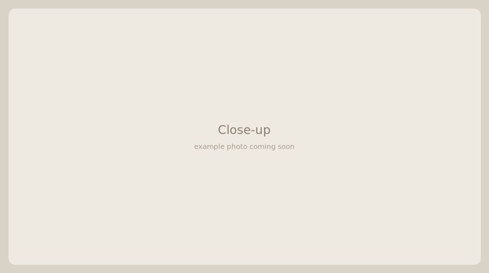
The same subject in three sizes. Move your feet between them — do not pinch-zoom.
6.5 The 3-shot rule: shoot for the edit video
For anything that happens — cooking, a match, a market, a birthday — film it at least three ways: wide, medium, close. Each 5–10 seconds, held still. In the edit you can now cut between them and the video suddenly has rhythm.
6.6 Camera movements video
Every move should have a reason — to follow someone, reveal something, or bring us closer. Start still, move slowly and evenly, end still. One move per shot.
Pan
Rotate left ↔ right from one spot. Follow a person, or sweep across a view.
Use: following action, showing a landscape
Tilt
Rotate up ↕ down from one spot. Reveal a tall building or a person from shoes to face.
Use: reveals, scale, introductions
Push in / Pull out
Walk slowly toward the subject (intensity, attention) or away (release, ending, reveal).
Use: emphasis, endings, emotion
Truck / tracking
Slide sideways, keeping pace with a walking subject or gliding past a scene.
Use: walking & talking, market rows, parallax
Orbit
Circle around the subject, keeping them centred and the distance constant.
Use: hero moments, products, dancers
Boom / rise
Lift the phone smoothly from low to high (or lower it), often starting behind an object.
Use: reveals, openings, drone-like feel
The reveal
Start with the lens behind a wall, a plant or a person's back, then move sideways or up so the scene appears. The cheapest "wow" move there is.
Parallax
Truck sideways with something close to the lens (a pole, leaves, a railing). The foreground slides faster than the background and the shot feels 3D.
6.7 In-camera transitions video
The whip pan. Same direction, same speed in both shots, cut in the blur — the two clips feel like one continuous move.
Cover the lens
End shot A by covering the lens with your hand or an object; start shot B by uncovering it. Cut on the black frame.
Walk-past wipe
Have someone walk very close past the camera so they fill the frame for a moment. Cut while the frame is blocked.
Match cut
End on a shape or action (a round plate, a door closing) and start the next shot on the same shape or action somewhere else.
Sky / ground tilt
Tilt up to the sky at the end of shot A, tilt down from the sky at the start of shot B — a classic way to jump locations.
6.8 Sound is half the video video
Get the phone within 1 metre of whoever is speaking. Distance is the number-one cause of bad audio.
Wind ruins recordings. Turn your back to the wind, shelter behind a wall, or slip a small foam cover (even a sock) over the microphone.
Do not cover the mic with your fingers — check where the small holes are on your phone.
A cheap clip-on (lavalier) microphone or a wireless mic is the best value upgrade you can make for talking videos.
Record 10 seconds of silence ("room tone") at every location — editors use it to smooth cuts.
Pick quiet moments: fridges, fans, generators and traffic are louder on the recording than in real life.
6.9 Slow motion, time-lapse and hyperlapse video
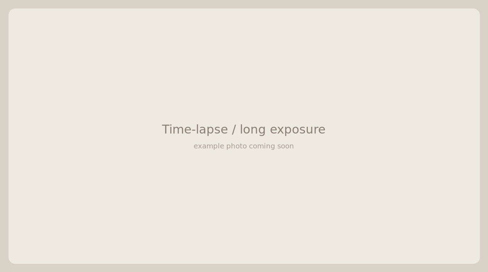
Time-lapse and long exposure. Prop the phone perfectly still (tripod, wall, bag) and let time do the work: traffic becomes rivers of light, clouds race, a market fills and empties.
Slow motion
120 or 240 fps. Needs lots of light. Best for water, jumps, hair, fabric, sport. Keep the shot wide enough that the action stays in frame.
Time-lapse
Phone locked on a tripod. 10 real minutes ≈ 20 seconds. Sunsets, clouds, traffic, crowds, cooking, building something.
Hyperlapse
A moving time-lapse: walk slowly toward one fixed point, keeping it in the same spot on the grid every step. Use the hyperlapse mode if your phone has one.
6.10 Lighting for video video
Everything from chapter 02 applies, but you cannot fix video exposure later as easily as a photo — get it right in camera.
Face the window for talking-head videos; never sit with the window behind you.
Avoid mixed light (daylight + yellow bulbs) — skin goes green/orange. Turn one of them off.
A small LED panel or ring light is cheap and makes indoor videos consistent. Bounce it off a white wall for softer light.
Golden hour is short — rehearse first, then shoot.
🧪 Try it — a 30-second story in eight shots
Pick a simple event: making tea, a boda ride, a game of football, opening a shop.
Lock exposure. Film: 1 wide, 2 mediums, 2 close-ups, 2 details, 1 ending shot (a pull-out or a tilt to the sky). 5–10 seconds each, held still.
Add one camera move — a push-in or a reveal — and one in-camera transition.
Record 10 seconds of room tone. Now edit (chapter 07).
07
Editing basics
Editing should finish a good photo, not rescue a bad one. Small, honest adjustments beat heavy filters every time.
7.1 The five-step photo edit photo
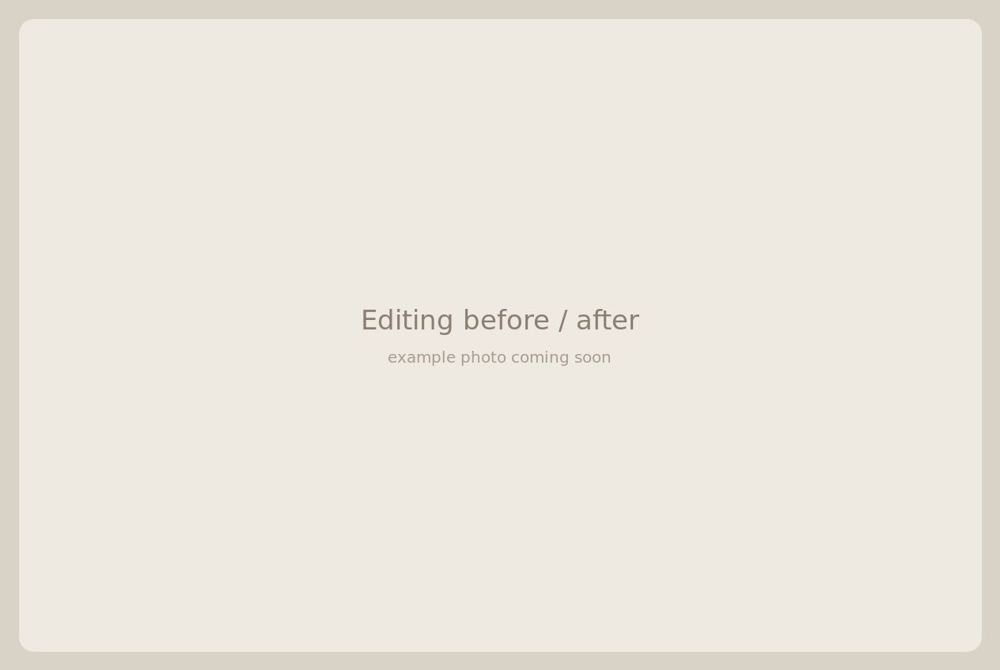
BeforeAfter
Drag the handle. Left is a typical flat, straight-from-the-camera look; right is the same photo after the five steps below. Notice it looks corrected, not filtered.
Crop and straighten. Level the horizon, cut distractions from the edges, re-apply the rule of thirds.
Exposure and contrast. Brighten or darken overall, then add a little contrast so blacks are black.
Highlights down, shadows up. Recover the sky, open the dark areas — gently. This is what makes a phone photo look expensive.
White balance. If skin looks orange or blue, nudge the temperature until it looks like real life.
A touch of vibrance and sharpness. Vibrance (not saturation) boosts dull colours without ruining skin. Stop before it looks "edited".
⚠️
Signs you have gone too far
Glowing halos around trees and buildings, orange faces, grey skies turned neon, crunchy over-sharpened edges. Sleep on it and look again tomorrow.
7.2 Apps worth learning
App
Good for
Cost
Built-in editor (Photos / Gallery)
All five steps above. Underrated — start here.
Free
Snapseed
Precise photo edits, selective brightening, healing small distractions.
Cut tight. 3–7 seconds per clip for social videos. If a shot is boring, it is too long.
Cut on the beat of the music and on action (as a hand reaches, a door opens).
Follow the 3-shot rule in the edit: wide → medium → close-up. Do not jump between two similar sizes of the same subject.
Add captions — most people watch with the sound off.
Match colour between clips shot at different times so the video feels like one place.
Export at the resolution you shot (1080p or 4K) and in the orientation of the platform.
Keep the originals. Never overwrite; back up to Google Photos, iCloud or a laptop.
08
Cheat sheet
Everything on one screen.
✅ Before every shot
Wipe the lens
Where is the light coming from?
Grid on — horizon level, subject on a third
Tap to focus, slide exposure slightly down
Check the edges and the background
Two hands, elbows in, breathe out
Take five more from other angles
📐 Angles → feelings
Low → powerful, tall, heroic
Eye level → honest, equal
High → small, gentle, cute
Bird's eye → graphic, orderly
Worm's eye → awe, scale
Dutch tilt → energy, tension
Through / reflection → depth, dreamy
☀️ Light
Golden hour: 07:00–08:00 & 18:00–19:00
Midday: find open shade, face outwards
Indoors: switch off bulbs, face the window
Side light = texture · Back light = glow / silhouette
Night: Night mode + lean on something; no flash
🧩 Composition
Thirds & power points; lead room for gaze
Leading lines toward the subject
Frame within a frame
Symmetry: dead centre, perfectly level
Negative space vs fill the frame
Foreground + middle + background
🎬 Video quick settings
Social: 1080p 30 fps · Quality: 4K 30 fps
Action / slow-down: 60 fps · Slo-mo: 120–240 fps
Film look: 24/25 fps (25 fps in Uganda)
Stabilisation ON · lock rotation · DND on
Press & hold to lock focus + exposure
Hold every shot still 5 s before/after moving
🎥 Shooting for the edit
Wide → medium → close-up → detail
One move per shot: pan, tilt, push, truck, orbit, rise
Start still, move slow, end still
Mic within 1 m; hide from wind; record room tone
Ending: pull-out, tilt to sky, or whip pan
🙂 People
2× or 3× from 2 m — never 0.5× close up
Focus on the nearest eye
Body 45°, chin forward & down, hands busy
Open shade, facing the light
Groups: closer than feels natural, shoot 5×
🎚️ Edit in five moves
Crop & straighten
Exposure & contrast
Highlights down, shadows up
White balance for true skin
A touch of vibrance & sharpness — then stop
09
7-day practice plan
Fifteen to thirty minutes a day. By Sunday you will have a short film and a gallery you are proud of.
Day 1
Grip & focus
20 photos of one object. Two-hand grip, volume shutter, tap-to-focus, exposure slider on every shot.
Day 2
Light
One friend or object at 07:30, 13:00 and 18:30. Front, side and back light each time. Compare.
Day 3
Composition
One street, seven patterns: thirds, lines, framing, symmetry, negative space, fill the frame, layers.
Day 4
Angles
One subject, six angles. Then pick your favourite angle and shoot ten different subjects with it.
Day 5
People
Ten portraits in open shade at 2×. Body 45°, chin down, hands busy, focus on the eye.
Day 6
Video
Eight shots of one event: wide, mediums, close-ups, details, an ending. Two camera moves, one transition.
Day 7
Edit & share
Five-step edit on your best five photos. Cut the 30-second video with music and captions. Post it.
🚀
After the week
Pick one thing to get obsessed with for a month — portraits, food, street, your neighbourhood at golden hour. Depth beats variety. Then come back to this guide and read it again; it will say different things to you.